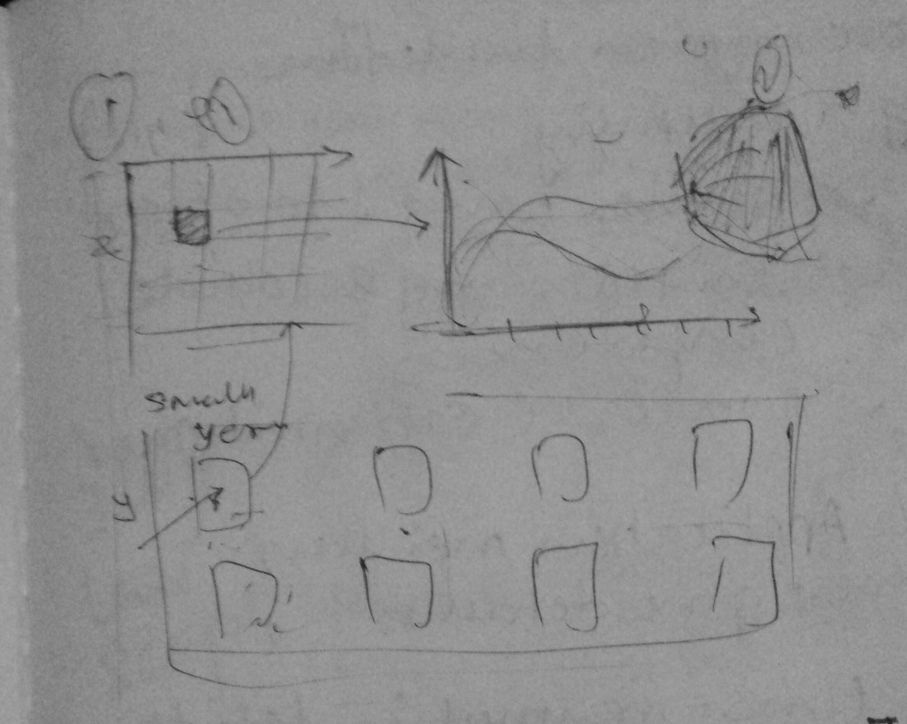

Documentation
Summary
This visualization demonstrates the degree of interdependence of world stock market using various stock market indicator like Market Capitalization, Blue-chip index, Broad Stock Index Performance, Currency Exchange Rate and Share Turnover Velocity. The data used for the visualization is borrowed from the monthly reports of World Federation of Exchanges. The report covers stock market data of most of the world’s stock exchanges. This visualization shows data of year 2010.
The visualization uses Pearson correlation coefficient to find degree of correlation between two chosen stock in the matrix. The correlation co-efficient value oscillates between -1 to +1. If the value is -1 the correlation is negative and if its +1 it can be assumed that there is positive correlation and two stock market, follow each other. On the other hand, if the correlation is 0, it means two stock market not dependent on each other and we can’t establish relationship between them. The visualization represents negative values in red color and positive values with the green color in correlation matrix.
Additionally, visualization can cluster strongly related markets based on their correlation coefficient. The visualization also show trend line when clicked on any cell in the matrix along with Venn diagram to visualize the degree and form of the interdependence.
Visualization show that, emerging markets move together with markets of developed countries up to some extent. This information can be used by investor in diversifying their portfolio to hedge the potential risk in the market. It can also be used by the economists to predict domino effect if any one of the market takes hit.
Design Process
Design process began with collecting and analyzing nature of data. As data was in excel format and had many more indicator than what we were interested. We had to clean data and create comma separated file from the monthly excel report of World Federation of Exchanges.

Once we had data we began brainstorming best ways to find the correlation from the raw data. We came across the Pearson Correlation Co-efficient (PCC) which deduce the correlation between two sets of data. This co-efficient was idle for our problem statement. We decided to utilize the PCC. 
The next challenge was to effectively show the PCC values between two stock exchange and individual stock market indicator trend over the year. We started brainstorming various ideas like parallel co-ordinate, word map etc. but at the end we settled with the Correlation matrix, Time series line graph and Venn diagram. Correlation matrix best represent relation between two variables in the array of variables.
RATIONALE OF DESIGN CHOICES
Design and Position of Legend
Correlation Matrix Heat map:The number of stock exchanges and their relationship with every other stock market yields to large amount data and matrix were natural choice for such visualization.
Color for showing degree of correlation is represented by the green and red color. Greener the cell higher the correlation and red the cell inverse the relationship. There was critical design decision made to show element with no correlation with white color to separate out them from rest of cells.
Trend of Stock Market: Visualization aids user with trend of actual market indicator value for selected cell.
4. Venn Diagram: It is additional visual cue to reinforce the degree of correlation with visual instead of number and color. It utilizes the circles, if two circle overlap each other it means that they have positive correlation and vice versa.
Choice of Charts

DISCOVERING FACTS
- NYSE and Nation stock Exchange Small multiple across various parameter showing positive relation
- NYSE maintains positive relationship with most of world market showing other market react in same manner to the movement of New York Stock Exchange
-
Athens Stock Market consistently shows negative correlation with the American stock market like NYSE and NASDAQ